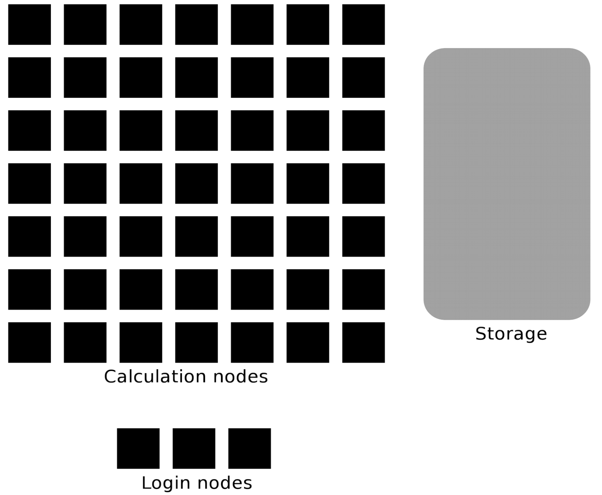

Introduction to running R, Python, and Julia in HPC
Content
This course aims to give a brief, but comprehensive introduction to using Python, Julia and R in an HPC environment.
- You will learn how to
start the interpreters of Python, Julia and R by the HPC module system
find site installed packages/libraries
install packages/libraries yourself
use virtual environments
use the calculation nodes - write batch scripts - work interactivly
This course will consist of lectures interspersed with hands-on sessions where you get to try out what you have just learned.
Cluster-specific approaches
The course is a cooperation between UPPMAX (Rackham, Snowy, Bianca) and HPC2N (Kebnekaise) and will focus on the compute systems at both centres.
Although there are differences we will this time not have seperate sessions.
Preliminary schedule
Day |
Language |
|---|---|
Wednesday 8 Feb |
Python |
Thursday 9 Feb |
Julia |
Friday 10 Feb |
R |
Some practicals
Earlier courses
HPC-Python: https://uppmax.github.io/HPC-python
Q/A are public at the HackMD pages
Zoom
The course is run over Zoom. You should have gotten an email with the links
There will be a zoom for the lectures
When you join the Zoom meeting, use your REAL NAME.
The lectures and demos will be recorded, but NOT the exercises.
If you ask questions during the lectures, you may thus be recorded.
If you do not wish to be recorded, then please keep your microphone muted and your camera off during lectures and write your questions in the Q/A document (see below about Microsoft-365 collaboration document).
Please MUTE your microphone when you are not speaking and use the “Raise hand” functionality under the “Participants” window during the lecture. Please do not clutter the Zoom chat. Behave politely!
There will be breakout rooms used in the Zoom for the exercises.
You may enter there and you will get personal help
Collaboration document (Microsoft-365)
Use this page for the workshop with your questions.
- Depending on how many helpers there are we’ll see how fast there are answers.
Some answers may come after the workshop day.
Hint
Project ID: naiss2023-22-44
Directory name on rackham: /proj/py-r-jl
Please create a suitably named subdirectory below /proj/py-r-jl, for your own exercises.
Example of arrangement for the “worst case”!
HackMD
ZOOM view
web browser with course material
your own terminal
Warning
It is good to have a familiarity with the LINUX command line.
Short introductions : https://uppsala.instructure.com/courses/67267/pages/using-the-command-line-bash?module_item_id=455632
Linux “cheat sheet”: https://www.hpc2n.umu.se/documentation/guides/linux-cheat-sheet
UPPMAX
UPPMAX software library: https://uppsala.instructure.com/courses/67267/pages/uppmax-basics-software?module_item_id=455641
Whole intro course material (UPPMAX): https://www.uppmax.uu.se/support/courses-and-workshops/introductory-course-winter-2022/
HPC2N
HPC2N’s intro course material (including link to recordings): https://github.com/hpc2n/intro-course
HPC2N’s YouTube channel video on Linux: https://www.youtube.com/watch?v=gq4Dvt2LeDg
Prepare your environment now!
Please log in to Rackham, Kebnekaise or other cluster that you are using.
Use Thinlinc or terminal?
It is up to you!
Graphics come easier with Thinlinc
For this course, when having many windows open, it may be better to run in terminal, for screen space issues.
Log in to Rackham!
Terminal:
ssh -Y <user>@rackham.uppmax.uu.seThinLinc app:
<user>@rackham-gui.uppmax.uu.seThinLinc in web browser: https://rackham-gui.uppmax.uu.se
If not already: create a working directory where you can code along. - We recommend creating it under the course project storage directory
Example. If your username is “mrspock” and you are at UPPMAX, this we recommend you create this folder:
$ mkdir /proj/py-r-jl/mrspock/<language>
Kebnekaise through terminal:
<user>@kebnekaise.hpc2n.umu.seKebnekaise through ThinLinc, use:
<user>@kebnekaise-tl.hpc2n.umu.seCreate a working directory where you can code along.
Example. If your username is bbrydsoe and you are at HPC2N, then we recommend you create this folder:
/proj/nobackup/<your-project-id>/bbrydsoe/<language>
The two HPC centers UPPMAX and HPC2N
Two HPC centers
There are many similarities:
Login vs. calculation/compute nodes
Environmental module system with software hidden until loaded with
module loadSlurm batch job and scheduling system
pip installprocedure
… and small differences:
commands to load Python, Python packages, R, Julia
isolated environments
virtualenvvsvenvslightly different flags to Slurm
… and some bigger differences:
UPPMAX has three different clusters
Rackham for general purpose computing on CPUs only
Snowy available for local projects and suits long jobs (< 1 month) and has GPUs
Bianca for sensitive data and has GPUs
HPC2N has Kebnekaise with GPUs (and KNLs)
Conda is recommended only for UPPMAX users
Warning
At both HPC2N and UPPMAX we call the applications available via the module system modules.
To distinguish these modules from the python modules that work as libraries we refer to the later ones as packages.
Briefly about the cluster hardware and system at UPPMAX and HPC2N
What is a cluster?
Login nodes and calculations nodes
A network of computers, each computer working as a node.
Each node contains several processor cores and RAM and a local disk called scratch.

The user logs in to login nodes via Internet through ssh or Thinlinc.
Here the file management and lighter data analysis can be performed.

The calculation nodes have to be used for intense computing.
Common features
Intel CPUs
Linux kernel
Bash shell
Technology |
Kebnekaise |
Rackham |
Snowy |
Bianca |
|---|---|---|---|---|
Cores per calculation node |
28 (72 for largemem part) |
20 |
16 |
16 |
Memory per calculation node |
128-3072 GB |
128-1024 GB |
128-4096 GB |
128-512 GB |
GPU |
NVidia K80 and V100 |
None |
Nvidia T4 |
2 NVIDIA A100 |
Material for improving your programming skills
- CodeRefinery develops and maintains training material on software best practices for researchers that already write code.
Their material addresses all academic disciplines and tries to be as programming language-independent as possible. https://coderefinery.org/lessons/
Python Lessons:
Julia Lessons: